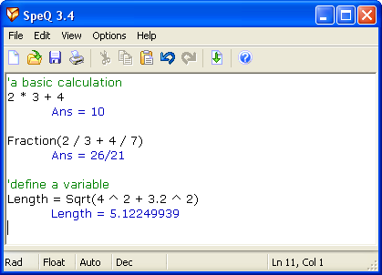
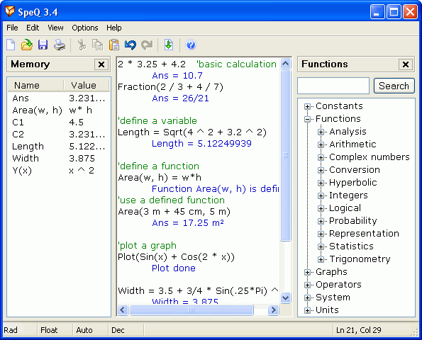
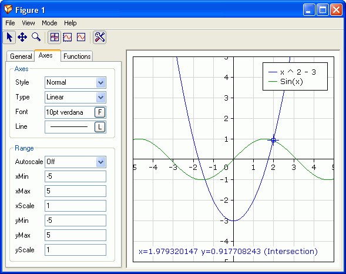
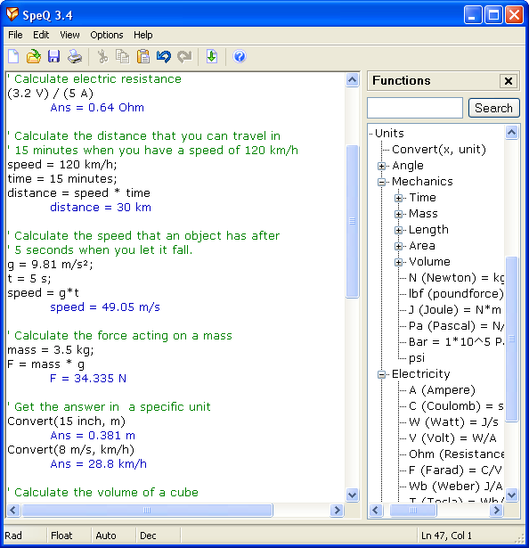

To give an impression of the interface of SpeQ Mathematics here some screenshots.
Simple interface
If you don't need advanced options you can close the side panels and possible hide the toolbar.
Then SpeQ looks just like a simple text editor.
You can enter your calculations and press <Enter> to calculate them.
The answer will be printed on the next line in a blue color.

Advanced interface
With the Memorylist and Functionstree shown SpeQ looks like this.
In the Memorylist all defined variables and functions are listed.
In the Functionstree you find an overview of all available functions, constants, operators and commands.

Figure interface
With SpeQ you can plot functions. You can move and zoom the plot and trace the plotted functions.
Intersections, maxima and minima are detected automaticly.
If desired you can adjust all properties of the figure in the Propertylist or from within the workarea of SpeQ.

Units
SpeQ offers extensive support for units, which is very useful for engineers. By using units you can make calculations with physical quantities easier and more reliable, because you can no longer make conversion mistakes (for example between meters, millimeters and inches). SpeQ includes all SI and US units.

-
Screenshots